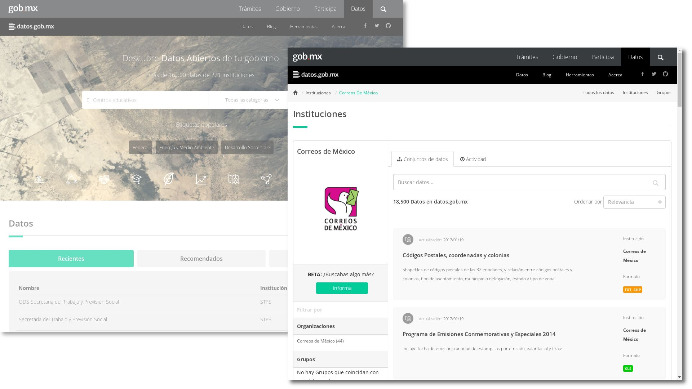
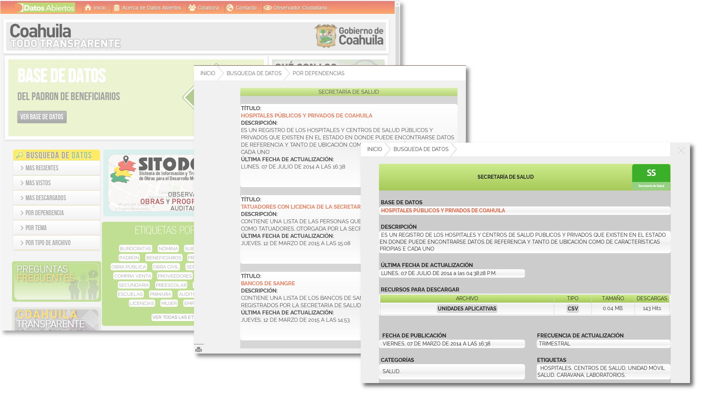
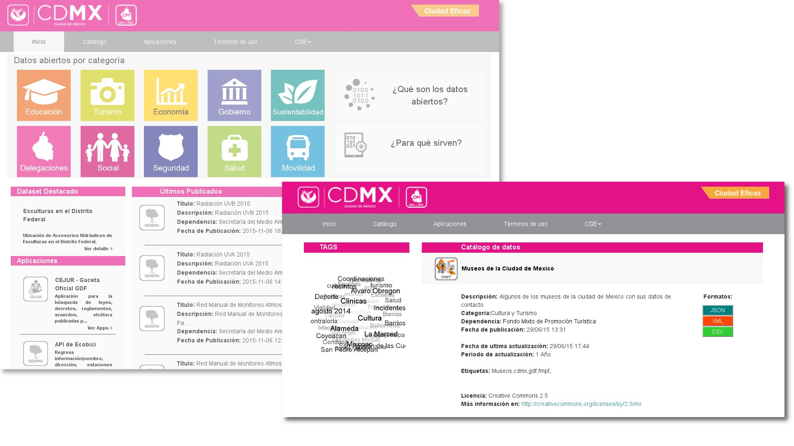
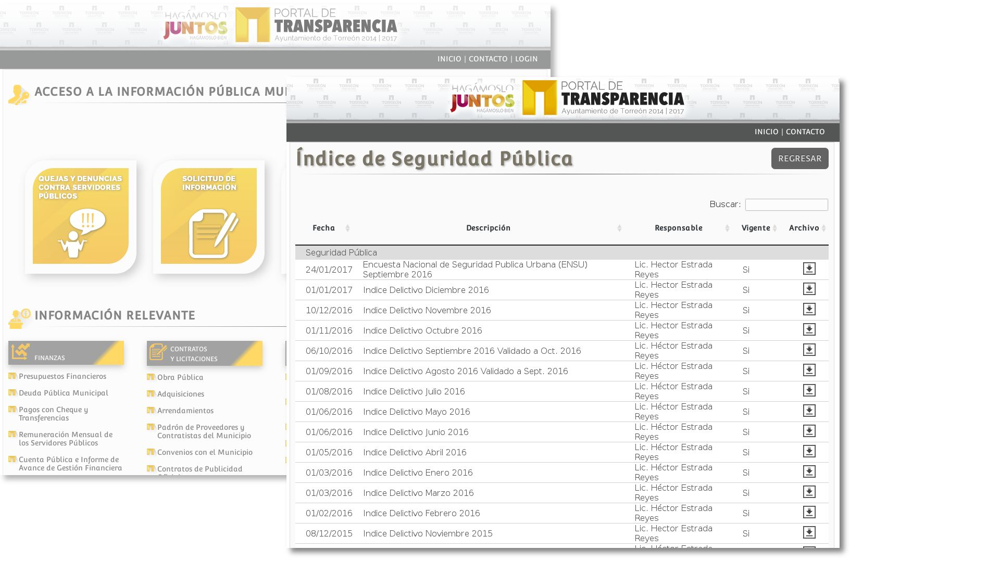
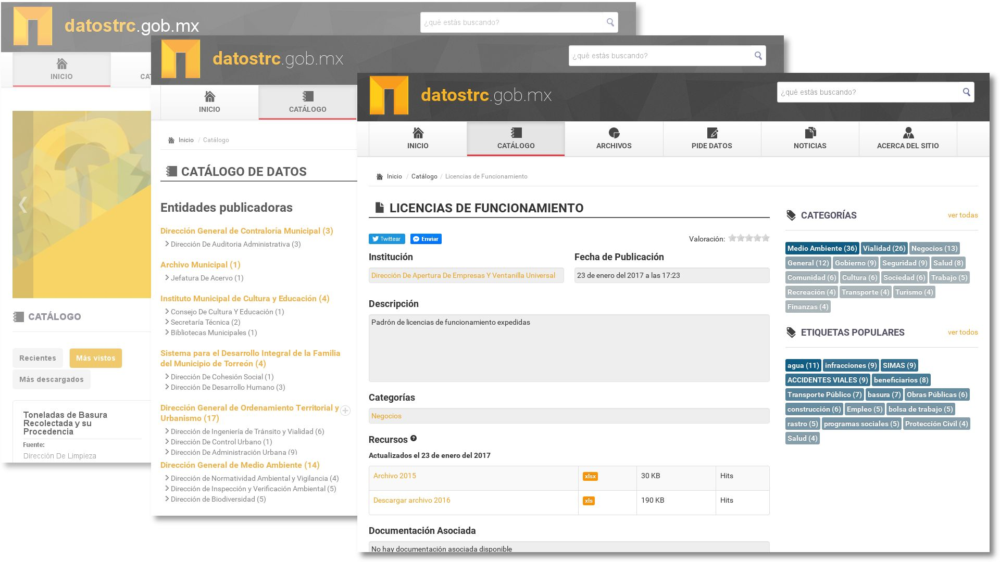
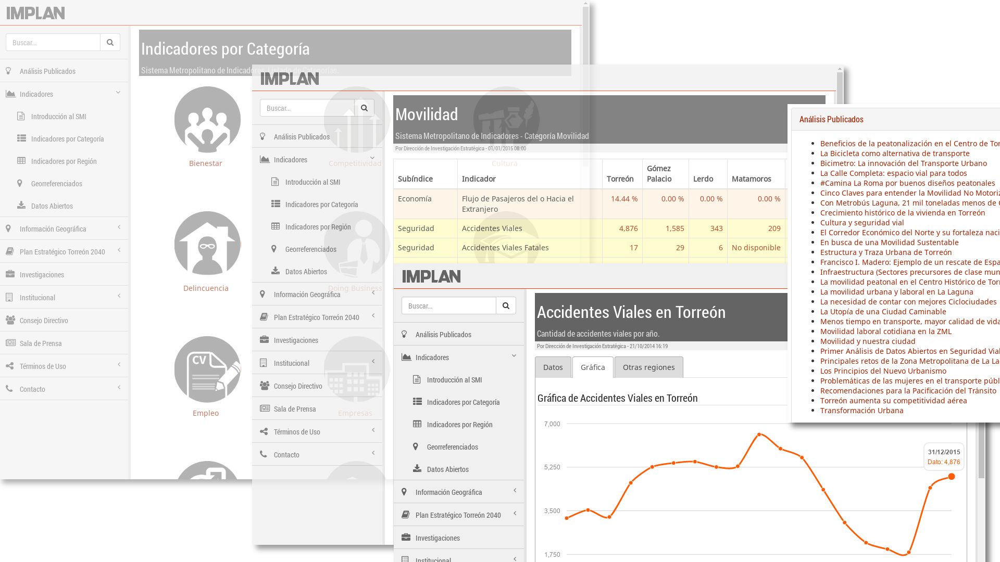

En una sociedad democrática es necesario que los ciudadanos sepan qué está haciendo su gobierno. De acuerdo con las investigaciones realizadas por la World Wide Web Foundation tan sólo 8% de los países proporcionan acceso en línea sin restricciones a conjuntos de datos sobre gasto público, adquisiciones y sobre desempeños de los servicios de salud y educación.
Necesitamos que todos puedan acceder, estudiar y usar los datos para mejorar la calidad de vida, crear oportunidades de desarrollo para las empresas, impulsar la innovación y combatir la corrupción.
Para que los datos abiertos sean pilares de un gobierno abierto deben ser divulgados en sitios web que vayan más allá de lo convencional; es decir, no basta usar un gestor de contenidos Web y subir los archivos para cumplir con este propósito. Es necesario que sean "plataformas de conocimiento", que sean detonantes de una nueva cultura ciudadana y constituyan eficientes herramientas para monitorear las políticas públicas; que sean amigables con las personas y con virtudes técnicas para desarrollar aplicaciones de software.
Lo bueno es que hoy en día disponemos de tecnologías de punta, software libre y conocimiento en línea para que una copia del conocimiento, información y datos abiertos esté disponible en Internet, con estándares abiertos y a un costo muy bajo.
Hay muchas formas de construir una plataforma de conocimiento, por lo que sobran las opciones. Podemos crear nuestra propia plataforma desde cero o elegir una prefabricada; elegir entre alternativas gratuitas tanto de paga; desde sencillas hasta complicadas. La combinación entre el software que la estructure, la calidad de los datos y el enriquecimiento intelectual dará un resultado que puede ser deficiente o sobresaliente.
Las Cinco Estrellas de los Datos Abiertos
Tim Berners-Lee, considerado el padre de la Web, ha sugerido un esquema de desarrollo para los datos abiertos.
| Estrellas | Logro realizado |
|---|---|
| Publicar tus datos en la Web, en cualquier formato y bajo una licencia abierta. | |
| Publicar tus datos en la Web como datos estructurados (por ejemplo, Excel en vez de digitalizaciones). | |
| Publicar tus datos en la Web en formatos no propietarios (por ejemplo, CSV en vez de Excel). | |
| Publicar tus datos en la Web en formatos no propietarios y con URIs (Universal Resource Locator) para hacer un vínculo claro y fijo a éstos datos. | |
| Publicar tus datos en la Web en formatos no propietarios, con URIs claros y fijos para vincular a éstos. Además ofrece enlaces a otros datos y contenidos para proveer contexto. |
Tim Berners-Lee nos recomienda que utilicemos el esquema de desarrollo como un modelo constructivo y progresivo. Donde NO necesariamente las plataformas logren las cinco estrellas desde su inauguración; sino que vayan mejorando y enriqueciendo sus datos paso a paso, manteniendo la calidad e incrementando sus beneficios.
Cabe destacar que este esquema de desarrollo es igualmente aplicable para plataformas de datos abiertos, de indicadores, de observatorios ciudadanos, de sitios web gubernamentales, de organizaciones civiles y de la iniciativa privada.
A continuación, ejercitaremos las "Cinco Estrellas de los Datos Abiertos" en algunas plataformas nacionales y regionales. Este análisis y las imágenes que mostramos fueron hechas en marzo de 2017; por lo que en el futuro los resultados podrían cambiar.
datos.gob.mx

- Publica los datos en la web. Se organizan por instituciones (logotipos) y categorías (iconos).
- Publica datos estructurados.
- Publica parte de los archivos en formatos no propietarios; porque depende de la institución de origen.
- Publican en un blog diversos análisis, recomendaciones y logros.
- Estrellas 1/2
Coahuila Todo Transparente

- Publica los datos en la web. Organiza los datos por dependencias y etiquetas.
- Publica datos estructurados.
- Publica en formatos no propietarios. Ofrece la descarga principalmente en CSV.
- Estrellas
Datos Abiertos CDMX

- Publica los datos en la web. Organiza los datos abiertos por categorías identificadas por íconos amigables.
- Publica datos estructurados.
- Publica en formatos no propietarios. Ofrece las descargas en JSON, XML y CSV.
- Estrellas
Torreón Transparencia

- Publica los datos en la web. Se organizan por instituciones.
- Publica parte de los datos como datos estructurados, por ejemplo, en Excel.
- Estrellas 1/2
datostrc.gob.mx

- Publica los datos en la web. Se organizan por instituciones y categorías.
- Publica datos estructurados. Principalmente en Excel.
- Hace uso de archivos RDF que sirven para establecer un URI directo con los archivos de datos abiertos.
- La plataforma está preparada para mostrar documentación asociada, tiene pendiente aprovechar esta característica.
- Estrellas 1/2
IMPLAN Torreón

- Publica los datos en la web. Los indicadores se clasifican en ejes y categorías; las publicaciones también están categorizadas.
- Publica datos estructurados.
- Publica los datos en formatos no propietarios. La descarga del SMI es en CSV. Está pendiente la descarga del SIG.
- Se usan URIs claras y fijas, por ejemplo http://www.trcimplan.gob.mx/indicadores-torreon/seguridad-accidentes-viales.html
- Se ofrecen vínculos a análisis, indicadores, mapas y proyectos relacionados al final de cada publicación.
- Estrellas 1/2
Métrica de Gobierno Abierto del INAI y el CIDE
En marzo de 2017, el Instituto Nacional de Transparencia, Acceso a la Información y Protección de Datos Personales (INAI) y el El Centro de Investigación y Docencia Económicas (CIDE) presentaron la Métrica de Gobierno Abierto.
La Métrica de Gobierno Abierto es un instrumento que busca medir qué tanto puede conocer el ciudadano lo que realizan sus gobiernos y qué tanto puede incidir en sus decisiones.
Ésta utiliza una metodología novedosa: Se compone de dos dimensiones: transparencia y participación ciudadana; y de dos perspectivas: la de gobierno y la del ciudadano.
| Dimensiones | Transparencia del Gobierno Abierto | Participación en el Gobierno Abierto |
|---|---|---|
| Perspectiva Gubernamental | ¿El gobierno hace pública la información relativa a sus decisiones y acciones? ¿En qué medida lo hace? ¿De qué calidad es dicha información? | ¿Mediante qué formas pueden los ciudadanos incidir en la toma de decisiones públicas? |
| Perspectiva Ciudadana | ¿Que tan factible es que un ciudadano obtenga información oportuna y relevante para tomar decisiones? | ¿Qué posibilidad tienen los ciudadanos para activar un mecanismo que les permita incidir en las decisiones públicas? |
La métrica deriva en un estudio amplio y complejo; que no sólo evalúa la calidad de las plataformas de datos abiertos, sino que mide el uso que los ciudadanos hacen de las plataformas como componente para participar en el gobierno. En un análisis futuro, abordaremos esta importante propuesta.
Referencias
- World Wide Web Foundation
- Tim Berners-Lee en Wikipedia
- Cinco Estrellas de los Datos Abiertos por Tim Berners-Lee
- datos.gob.mx
- Coahuila Todo Transparente
- Datos Abiertos CDMX
- Torreón Transparencia
- datostrc.gob.mx
- IMPLAN Torreón
- Métrica de Gobierno Abierto del INAI y el CIDE